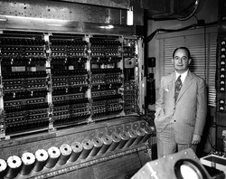

1940 - Primeiros Computadores Eletrônicos
A Segunda Guerra Mundial impulsionou o desenvolvimento de tecnologia de maquinário, entre eles podemos citar, inicialmente dois:
Atanasoff-Berry Computer - não era um computador digital completo, porém foi o primeiro a armazenar informações em sua memória principal;
Computador Elétrico Z3 - possuía uma memória com capacidade para armazenar até 64 números
1945 - ENIAC

Desenvolvido entre 1943 e 1945, na Universidade da Pensilvânia, o ENIAC (Eletronic Numeral Integrator and Computer) foi construído com o objetivo de acelerar os cálculos balísticos para a 2ª Guerra.
Com mais de 17.000 válvulas eletrônicas, que realizavam operações lógicas e aritméticas, possuía 30 metros de comprimento de 2,4 metros de altura.
1946 -1950 - UNIVAC e Transistores
O UNIVAC, foi produzido pelos mesmos desenvolvedores do ENIAC, porém, este foi o primeiro computador comercial, sendo chave na transição do uso de computadores com fins militares e acadêmicos para a aplicação prática.
Transistores, são semicondutores usados para amplificar ou trocar sinais eletrônicos, com a troca das válvulas pelos transistores tornou-se possível realizar 10 mil vezes mais processamentos.